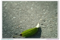
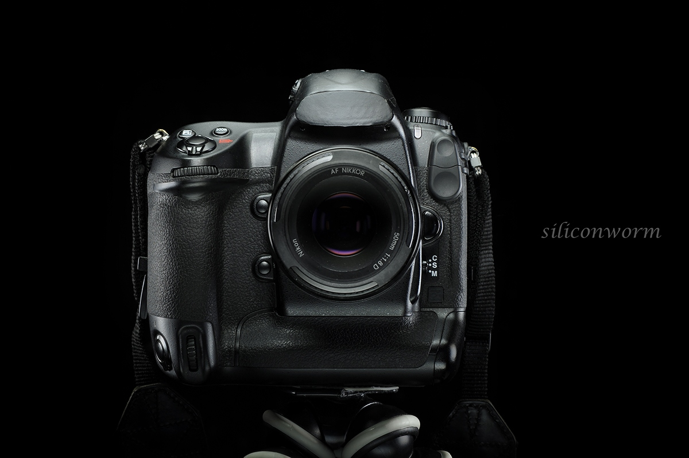
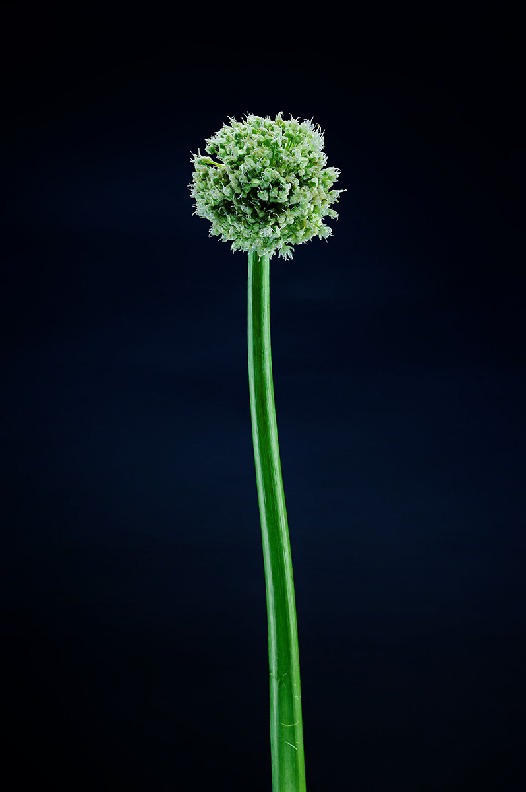

柒郎2015-10-22 20:474.5 分
操作性 5.00耐用性 4.00性价比 5.00解像力 5.00色彩还原 5.00机械结构 3.00
现代十字军2015-05-19 19:024.75 分
操作性 4.50耐用性 4.50性价比 5.00解像力 5.00色彩还原 5.00机械结构 4.50
AtianZ2015-03-09 13:424.5 分
操作性 5.00耐用性 4.50性价比 5.00解像力 4.50色彩还原 4.00机械结构 4.00
阴柔大侠2014-12-12 10:274.5 分
操作性 5.00耐用性 5.00性价比 5.00解像力 4.50色彩还原 3.50机械结构 4.00
DADAOZEI96692014-06-11 14:454.08 分
操作性 3.50耐用性 3.50性价比 5.00解像力 5.00色彩还原 4.00机械结构 3.50
promise3232014-02-16 19:054.33 分
操作性 4.00耐用性 4.50性价比 5.00解像力 4.50色彩还原 4.00机械结构 4.00
柒郎2014-01-18 17:17
kevenchen2013-12-09 20:334.33 分
操作性 4.00耐用性 4.50性价比 5.00解像力 4.50色彩还原 4.00机械结构 4.00

屎尿屁2013-09-06 17:244.42 分
操作性 4.50耐用性 4.50性价比 5.00解像力 4.50色彩还原 4.00机械结构 4.00
潇城摄客2013-06-22 21:185 分
操作性 5.00耐用性 5.00性价比 5.00解像力 5.00色彩还原 5.00机械结构 5.00
散步的熊猫2013-05-31 16:354.5 分
操作性 5.00耐用性 4.00性价比 5.00解像力 4.50色彩还原 5.00机械结构 3.50
kanefuyu2013-05-12 21:564.5 分
操作性 4.50耐用性 5.00性价比 5.00解像力 4.00色彩还原 4.00机械结构 4.50
ccmove1232013-05-12 21:534.58 分
操作性 4.50耐用性 4.50性价比 5.00解像力 4.50色彩还原 4.50机械结构 4.50
digitalera2013-03-16 13:394.17 分
操作性 5.00耐用性 4.50性价比 4.00解像力 3.50色彩还原 4.00机械结构 4.00
bigpeach2013-01-26 17:294.58 分
操作性 5.00耐用性 5.00性价比 5.00解像力 4.00色彩还原 4.50机械结构 4.00
汉子影像2013-01-22 12:014.67 分
操作性 5.00耐用性 4.50性价比 5.00解像力 4.50色彩还原 4.50机械结构 4.50
散步的熊猫2013-01-14 15:29
当鸽子哭泣时2013-01-02 19:454.67 分
操作性 5.00耐用性 5.00性价比 5.00解像力 4.50色彩还原 4.50机械结构 4.00
wze04452012-12-06 01:424.83 分
操作性 5.00耐用性 4.50性价比 5.00解像力 5.00色彩还原 5.00机械结构 4.50
法兰克福2012-11-02 10:545 分
操作性 5.00耐用性 5.00性价比 5.00解像力 5.00色彩还原 5.00机械结构 5.00
京AF50182012-10-06 00:114.17 分
操作性 4.50耐用性 4.00性价比 5.00解像力 4.50色彩还原 3.50机械结构 3.50
陈稳2012-09-24 15:564.17 分
操作性 3.50耐用性 4.50性价比 5.00解像力 4.50色彩还原 4.50机械结构 3.00
湖北小湖2012-07-31 07:094.08 分
操作性 4.00耐用性 4.00性价比 4.50解像力 4.50色彩还原 3.50机械结构 4.00
120zzz2012-07-28 11:075 分
操作性 5.00耐用性 5.00性价比 5.00解像力 5.00色彩还原 5.00机械结构 5.00
trawins2012-07-14 09:473.67 分
操作性 4.50耐用性 4.00性价比 4.50解像力 3.00色彩还原 3.00机械结构 3.00
siliconworm2012-07-12 04:345 分
操作性 5.00耐用性 5.00性价比 5.00解像力 5.00色彩还原 5.00机械结构 5.00


jerrycherry2012-07-04 15:54
尼古拉大王2012-05-19 22:345 分
操作性 5.00耐用性 5.00性价比 5.00解像力 5.00色彩还原 5.00机械结构 5.00
修己安人2012-02-14 17:374.25 分
操作性 4.00耐用性 4.00性价比 5.00解像力 4.50色彩还原 4.00机械结构 4.00
湯湯2012-01-27 03:464.33 分
操作性 4.50耐用性 4.50性价比 5.00解像力 4.00色彩还原 4.00机械结构 4.00
逍遥顽童2012-01-21 08:364.92 分
操作性 5.00耐用性 5.00性价比 5.00解像力 5.00色彩还原 5.00机械结构 4.50
tkartist2011-11-25 16:224.25 分
操作性 4.00耐用性 4.00性价比 5.00解像力 4.50色彩还原 4.50机械结构 3.50
alcayuan2011-10-22 23:544.67 分
操作性 5.00耐用性 5.00性价比 5.00解像力 4.50色彩还原 4.00机械结构 4.50
seraphzjs2011-09-20 16:414.25 分
操作性 4.50耐用性 4.00性价比 5.00解像力 4.50色彩还原 4.00机械结构 3.50
hanweixing2011-08-06 10:554.67 分
操作性 5.00耐用性 5.00性价比 5.00解像力 4.50色彩还原 4.00机械结构 4.50
碧空白云2011-05-25 23:324 分
操作性 4.00耐用性 4.00性价比 4.50解像力 4.50色彩还原 4.00机械结构 3.00
shengxcx2011-05-19 10:543 分
操作性 4.00耐用性 4.00性价比 4.00解像力 1.00色彩还原 1.00机械结构 4.00
cavinjia2011-04-27 12:314.25 分
操作性 4.00耐用性 5.00性价比 5.00解像力 4.00色彩还原 3.50机械结构 4.00
迁徙候鸟2011-04-25 13:493.75 分
操作性 4.50耐用性 3.50性价比 3.50解像力 3.00色彩还原 4.00机械结构 4.00
xmfp2011-04-07 00:474.08 分
操作性 4.00耐用性 4.00性价比 4.50解像力 4.50色彩还原 3.50机械结构 4.00
柒郎2011-02-26 00:38
北京北极熊2011-02-17 23:145 分
操作性 5.00耐用性 5.00性价比 5.00解像力 5.00色彩还原 5.00机械结构 5.00
johnlu0072010-12-12 22:184.83 分
操作性 5.00耐用性 4.00性价比 5.00解像力 5.00色彩还原 5.00机械结构 5.00
属猪的猪2010-12-11 11:184.42 分
操作性 4.50耐用性 4.00性价比 5.00解像力 4.50色彩还原 4.50机械结构 4.00
G2002010-12-04 20:584 分
操作性 4.00耐用性 3.50性价比 5.00解像力 4.50色彩还原 3.50机械结构 3.50
etgarnett2010-11-10 17:254.5 分
操作性 4.50耐用性 5.00性价比 4.50解像力 4.00色彩还原 4.50机械结构 4.50
qxbus2010-10-09 17:254.83 分
操作性 5.00耐用性 5.00性价比 5.00解像力 5.00色彩还原 4.50机械结构 4.50
00oooo002010-08-30 16:454.83 分
操作性 5.00耐用性 4.50性价比 5.00解像力 5.00色彩还原 5.00机械结构 4.50
807110842010-07-20 19:434.42 分
操作性 4.50耐用性 4.00性价比 5.00解像力 4.50色彩还原 4.50机械结构 4.00
libite2010-07-16 15:004.25 分
操作性 4.50耐用性 4.00性价比 5.00解像力 5.00色彩还原 4.00机械结构 3.00
pipiwang2002-04-28 11:294.92 分
操作性 5.00耐用性 4.50性价比 5.00解像力 5.00色彩还原 5.00机械结构 5.00
leeson11252002-04-16 17:114.83 分
操作性 5.00耐用性 4.50性价比 5.00解像力 5.00色彩还原 5.00机械结构 4.50
晴朗2002-04-14 11:494.83 分
操作性 5.00耐用性 4.50性价比 5.00解像力 5.00色彩还原 5.00机械结构 4.50
深蓝色2002-04-13 22:474.83 分
操作性 5.00耐用性 4.50性价比 5.00解像力 5.00色彩还原 5.00机械结构 4.50
dasa2002-04-10 19:544.67 分
操作性 5.00耐用性 4.00性价比 4.50解像力 5.00色彩还原 5.00机械结构 4.50